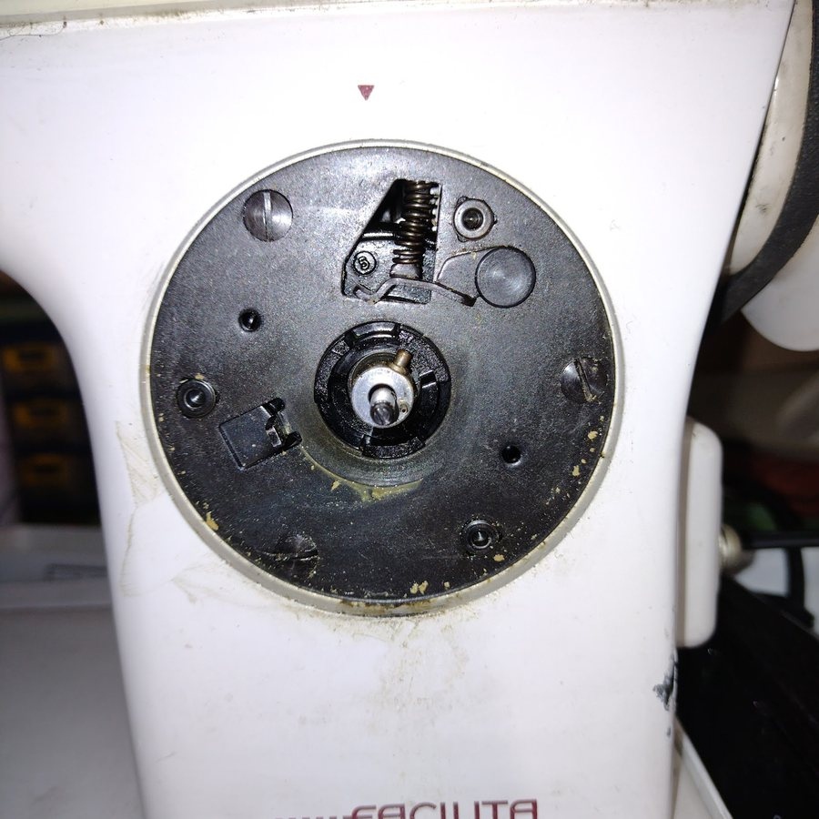
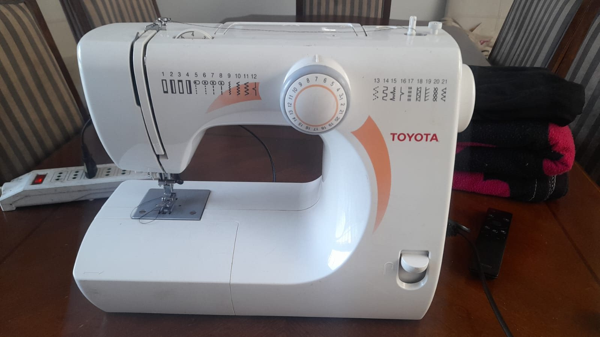
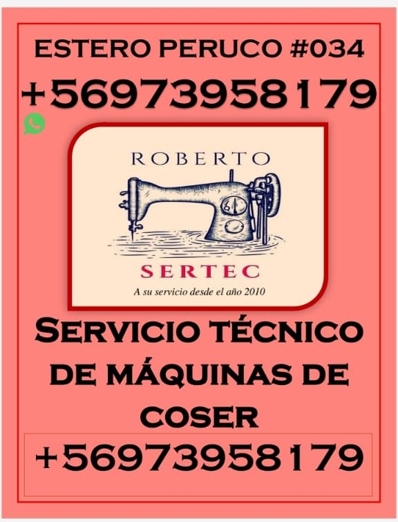
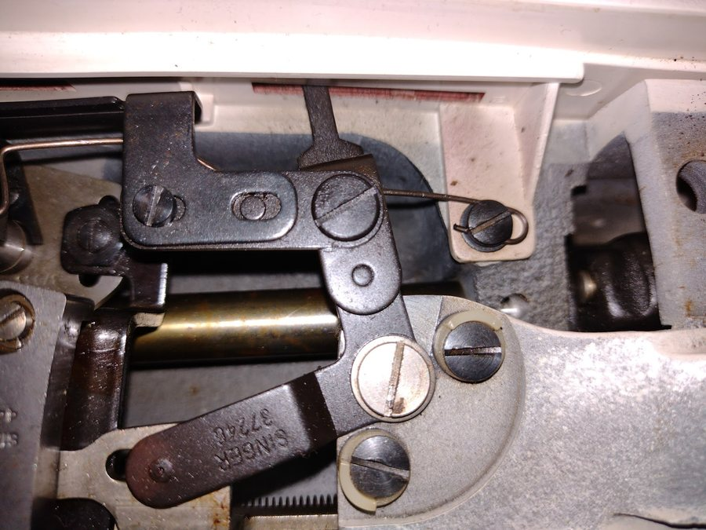
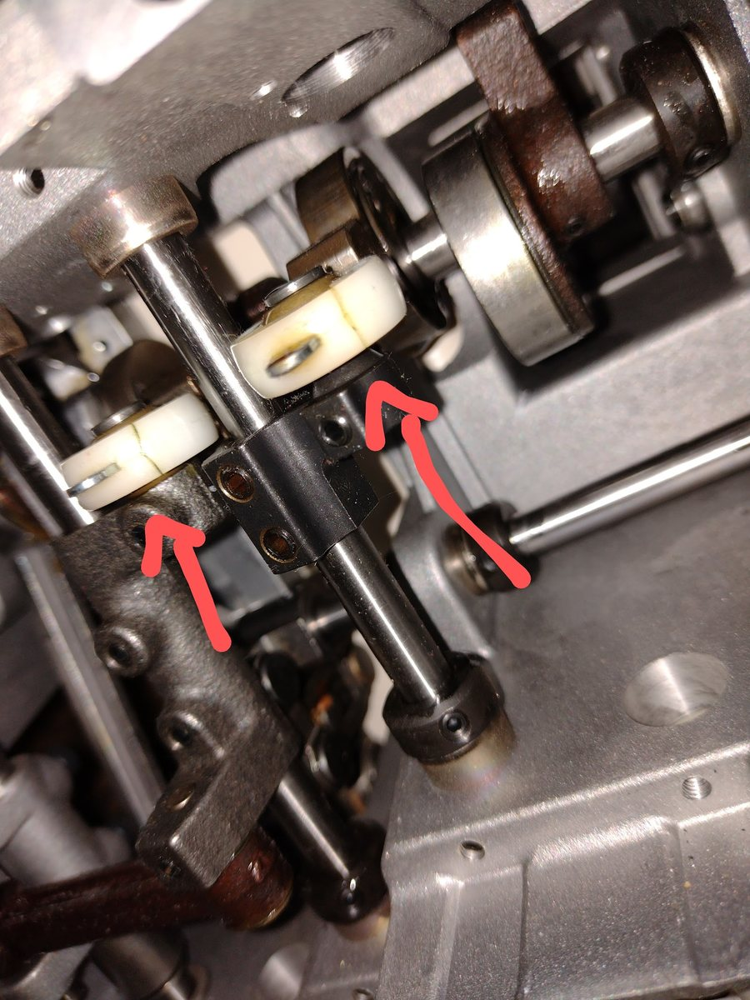
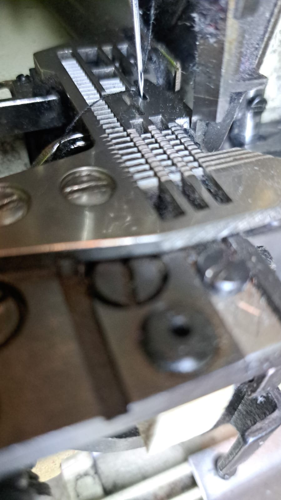
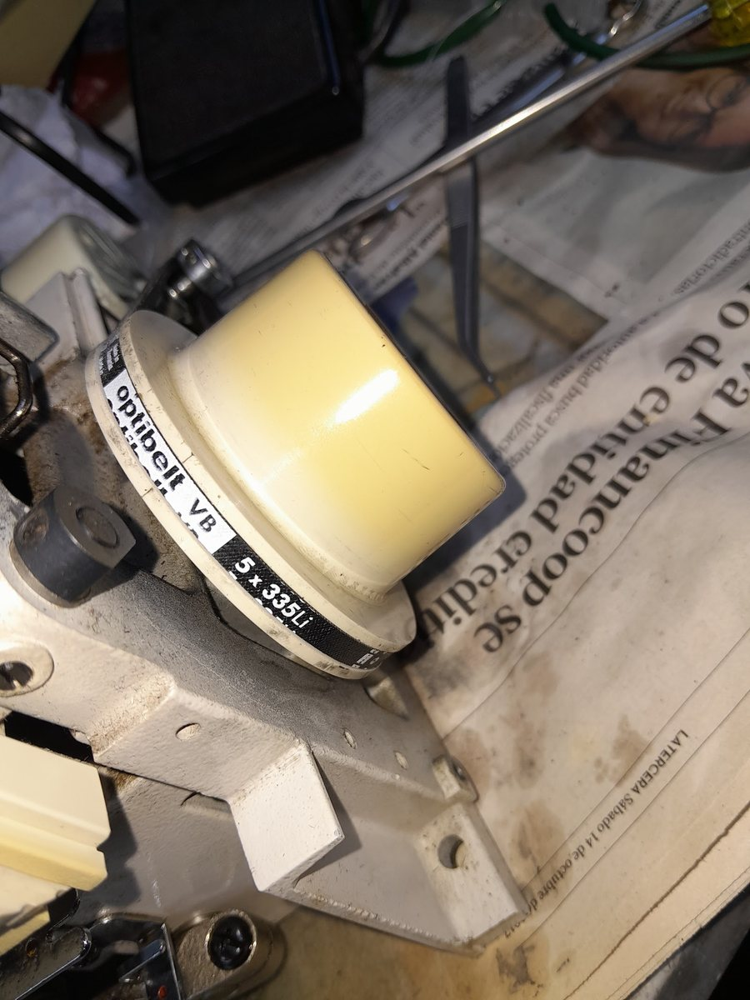

Máquinas domésticas
Brother, Toyota, Singer y otras marcas: revisamos la falla y la dejamos cosiendo otra vez.
ConsultarReparación y mantención de máquinas de coser domésticas e industriales. Revisamos la máquina frente a usted, le explicamos la falla y le damos el presupuesto antes de repararla.

Toque «Consultar» y se abre WhatsApp con el mensaje listo. El valor se lo damos después de revisarla.

Nos cuenta la marca y qué le pasa a su máquina.
Le explicamos la falla y el presupuesto antes de repararla.
En el plazo acordado, con garantía y consejos para cuidarla.
Fotos de trabajos publicadas en nuestra ficha de Google.




110 opiniones en la ficha de SERTEC Máquinas de Coser: 109 de 5 estrellas y una de 4.
Revisó la máquina frente a él, le explicó qué iba a reparar, cumplió el plazo acordado y además les enseñó a usarla.
Llevó su máquina Brother por una falla y la reparación fue rápida; destaca el presupuesto gratuito y la garantía.
Le explicó con detalle las fallas de su máquina y la tuvo lista de inmediato.
Complete lo que sepa y se abre WhatsApp con el mensaje listo.
Depende de la máquina y de la falla. La revisamos y le damos el presupuesto antes de repararla.
Sí. El plazo se lo confirmamos al entregarle su máquina.
Sí, domésticas, industriales y overlock.
En Estero Peruco 034, Quilicura. Atendemos de lunes a viernes de 11:00 a 20:00.